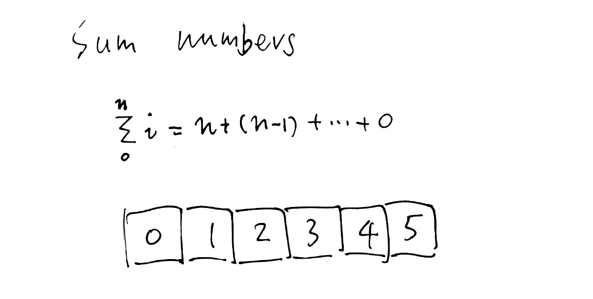
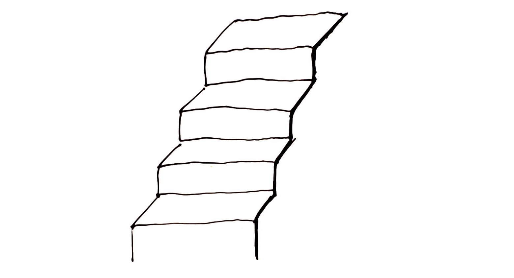
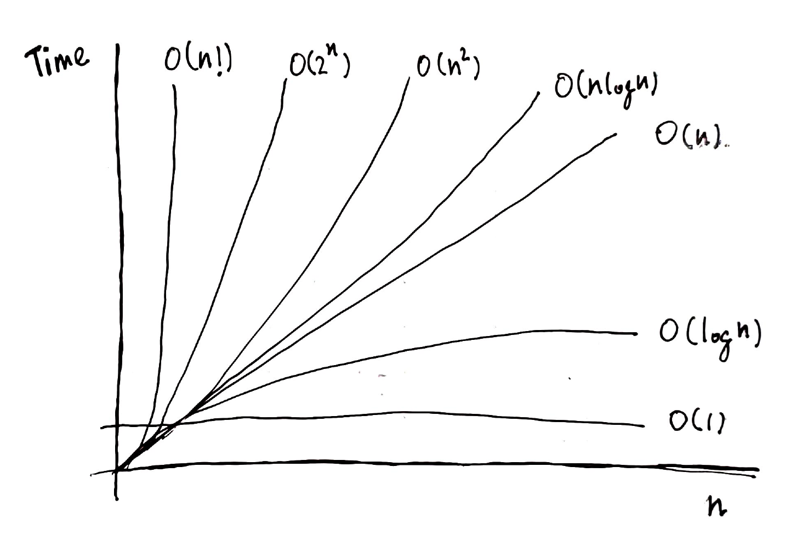

1
Sum numbers
There’s no easier way to start doing something than doing it.

What is a recursion within an algorithm?
Sum numbers
Tom: "Miss Sophia want us to sum from 0 to 5"
Me: "Oh yeah, let's do it then. 0 + 1 = 1; 1 + 2 = 3; ..."
Tom: "Wait, wait, i know the sum from 0 to 4, which is 10. I remember it."
Me: "Okey, in that case, the answer is 15 then!"
Say we want to find out the sum of a list of number from 0 to n. Assuming we have known the sum to the previous number n-1 , we can start with a simple algorithm.
function sum(n) {
return m + n;
}
What is m ?
Me: "Did you forget something? what is m?"
Tom: "oh, I forgot. m equals to sum(n - 1)!"
Me: "What?"
Tom: "What's the matter?"
Me: "... Nothing."
Replacing m with sum(n-1), like someone knew sum(n-1) already.
function sum(n) {
return sum(n - 1) + n;
}
Me: "I don't really think this would work. "
Tom: "Why not? If I know sum(4), then I can tell you sum(5)."
Me: "But what is sum(4)? How could you know sum(4) first."
Tom: "Well, if you can tell me what is sum(3) first."
Me: "This is ridiculous; how am I supposed to tell you sum(3)?"
Tom: "That's true, but I think I know what is sum(0)".
Me & Tom: "That is zero!"
Tom: "Ok, if we know sum(0), then I know sum(1) and ..."
Me & Tom: "Then I know sum(5)."
What we are missing is a case for 0, let’s add it.
function sum(n) {
if (n == 0) return 0;
return sum(n - 1) + n;
}
We can’t wait to run it.
> count(5) 15
It's 15, that's just great!
Me: "To be honest, I didn't expect we can get the result this way."
Tom: "Me either, but let's give it a name, we might make some fortune."
Me & Tom: "Recursion?!"
This is a recursion.
Recursion with function instance
What is the sum function?
function sum(n) {
if (n == 0) return 0;
return sum(n - 1) + n;
}
Inside the sum function, it calls the sum function. So it calls itself.
It sort looks like that. There’s also an argument associated with each function call, like sum(n) and sum(n-1). If we use the argument instead, we could distinguish both sum, since the former is called n and the latter is called n-1. In fact, this is exactly how it works, both are called function instance, they are the instances of the same function sum.
What is the difference between each function instance, say between sum(n) and sum(n-1)? It’s subtle. At one hand, they follow the same logic from the shared function body. But on another hand, each can have slight variations due to the exact pathway a function instance take. In our sum case, sum(5) is quite similar to sum(4), but not with sum(0); because the function instance with 0 as argument will return 0 right away. You can think sum(0) as a instance boundary, when the code reaches there, it has to go back to where it was called.
Since a function’s job is to run through some calculations and return the result, all function instances need to return sooner or later. Since it takes time to call and finish a function call, a function instance can be called but not yet finished. This function instance is then referred as an active instance. For example, after we call sum(5), it calls sum(4), when sum(4) is getting called, sum(5) hasn’t finished yet, thus sum(5) has to be active.
Alright, we have gone through couple of the key elements of a typical recursion, the function instance. We’ll come back to it often throughout this book. For each recursion problem we encounter, we’ll design the instance logic before we write the code.
New way of looking at the recursion
One of the challenge of learning recursion is that we are very used to the classical way of doing things using a for loop. But with recursion, things seem to be quite wild. In my opinion, this has something to do with the way we analyze the recursion.
If I tell you that you have been trained to be linear when it comes to the computer programming, what do you think? Why don’t we take it from a different angle?
Tom: “We should read the sum function line by line.”
Me: “Isn’t this what we just did, line by line?”
Tom: “No, I didn’t mean by the compiler. I mean by us.”
Me: “I’m confused, what you mean?”
Tom: “Just read it line by line and do it once.”
Let’s take a look at the function once again and see if this time we can just go over once.
function sum(n) {
if (n == 0) return 0
return sum(n - 1) + n
}
Say we start at one function instance n. What does the instance do after we call it?
sum(n) -> sum(n - 1) + n sum(0) -> 0
It asks us to call sum(n-1). This time, we do things a bit differently. Say we rename sum(n-1) to abc(n-1) for a second. The function abc returns the sum from 0 to n-1. Then we take the number returned from abc, add n to it and return it. That’s it. This is when n is not 0.
When n is 0, sum(0) returns 0 right away. That’s it.
Now let’s organize our thoughts a bit. So far, do you like this new way of tracing the recursive process only once?
Tom: “How do you feel?”
Me: “I don’t know. Aren’t they same?”
Tom: “Have you gone through each instance?”
Me: “Not really, I felt I went through the function once. But I also felt that I did nothing.”
Tom: “Weird! Isn’t it?”
To be frank, I don’t really know whether this should be called the new way of looking at the recursion, because literally what we did is to go through the logic of the function body once. But why do we emphasize this way of reasoning?
Couple of reasons. One as you have seen, it’s sticking to the implementation precisely. Or you can say the implementation should be sticking with the reasoning first. Two, a function can have multiple instances, but more or less it should do the same thing, therefore in theory we should just go through it once, and done with it.
Anybody’s brain, no matter how hard they have it trained in the past, has a limit. For instance, when I ask you to sum 0 to 5, you can go through all cases one by one taking your time; now if I raise n to 23, you might start to hesitate to spend time digging into each cases; now if I raise it to 178. You’d give up already. Not to mention n can be 348932483. The point is that, for the same problem, we can get different response simply by changing the size of the problem.
In order to study the problem effectively, we shouldn’t let it happen though.
Going through the recursion only once can be very effective, since it’s independent to the problem size. Strange enough, no matter how big the size, we are looking at the same function body. This also makes the running time analysis of the recursion possible.
Running time of recursion
The running time of an algorithm provides the order of the speed of the code, and is expressed as an expression. The notation is the big O. The number n is the size of the problem.
The running time O isn’t a precise measurement. It can’t tell you exactly how much time your algorithm spends. You still need to run the code to find out the exact number. But it can tell you the relationship between the running time and the size. For example, O(1) means the running time is a constant independent to n. O(n) is said to be linear with n.

What’s the running time for our sum algorithm? We can figure that out by looking at the function body.
sum(n) --> calls sum(n-1) and stores in a --> adds a and n, and returns it
For each function call, it calls another one and stores in a temperary variable, call it a, and then adds a and n together. Say the time spent for sum(n) is t|n, meaning t at n.
t|n = t|n-1 + 1
Then the time spent at n is the time spent at n-1 plus one. One stands for the unit time spent for the addition operation. I believe we can figure out that the time spent for n is actually n now.
Imaginging you are climbing stairs, the time it takes to climb one stair is one unit time. Thus the total time spent on climbing to this stair equals to the total time spent to the previous stair plus one.
t|n = n = O(n)
Thus the running time of our algorithm is said to be O(n), meaning the running time is linearly proportional to n. If sum(1) takes 1 microsecond, then we expect sum(5) to take about 5 microseconds. Of course 5 microseconds isn’t an accurate measurement, but we don’t expect to get sum(5) taking more than 10 microseconds, because that would break the O(n) analysis.
Recursion is one way of programming. Which means everything you learned from computer science still applies.
We can take a look at some typical running time order in the following graph.

Fig. Runing time order comparison
O(1) is an ideal one, which is a contant and extremely fast. O(log(n)), and O(n) are relatively efficient. Going to the left, O(nlogn) and O(n^2) start to be relatively more expensive. To the very left, O(2n) is an expensive algorithm and O(n!) is extremely expensive, and it explods even in small n. In general, we want to aim for more efficient algorithm design and avoid to land on very expensive one.